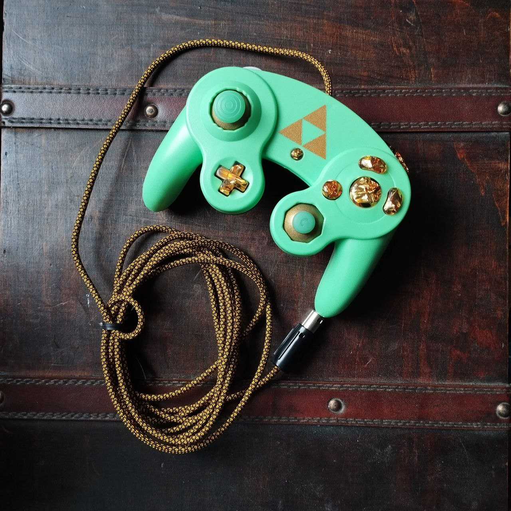
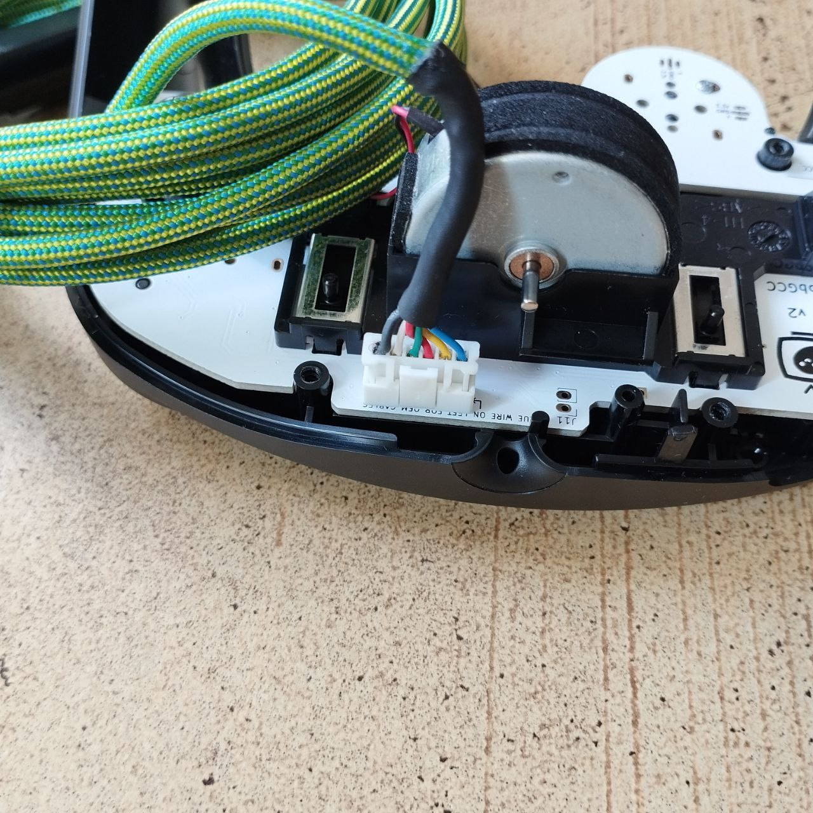

Hello and welcome! My name is Sebi, I entered the melee scene as a competitor in early 2022 and go by the tag Pinkbud. Some of you might already know me as the TO of the Berlin quarterly Pause events, for my involvement in other German tournament bangers like Kornspeicher and Sapf or from 3AM ranked sessions - ggs.
I got into modding controllers through the local community, started with very simple button swaps or stick replacements and learned more skills and techniques over time. However, there are many modifications and customisations I can not yet market. These include: Notches, Mouseclick anything, Snapback Capacitors and more.
Click here to fill out an order form. You will get a confirmation Email immediately. Within 48 hours I will send an invoice listing the final price including delivery and the payment information. Once payment is received, I will start getting your order ready to ship, which is gonna take between 1 day and 1 week depending on complexity and volume.



New in Box Nintendo Gamecube Controller (Smash Logo, Black): 50€
All controllers are imported from Japan and are the Super Smash bros. special Edition that released with the Nintendo Switch in 2018. Apart from the Language on the Box, they are identical to the ones that released in Europe and the USA around the same time. These are the most recent straight up Gamecube Controllers Nintendo has released and therefore are the premium choice for Gamecube enthusiasts even almost a decade later.
Phob 2.0.5. Motherboard Replacement (Firmware Version 0.29): 25€ solo, 50€ installed
The PhobGCC is an open source, community created PCB replacement for Gamecube Controllers. The biggest feature of a PhobGCC are the hall effect sticks that replace notoriously short lived stick potentiometers with magnets to vastly increase durability and precision. On top of that, there are many settings and options like snapback filters, button swapping, trigger modes and many more, that can be adjusted without opening the controller.
To build a full Phob, you need a working Gamecube Controller (Should have T3 stickboxes), a PhobGGC PCB, 4 D1H1 Magnets + Holders and cables to attach the C-Stick PCB. SOLDERING IS REQUIRED TO BUILD A PHOB.
If you order a preinstalled PhobGCC, it will be fully installed and calibrated so the controller is ready to play out of the box.
If you order the individual board, you will receive and empty PhobGCC board, Magnets + Holders and a 6 Pin ribbon cable. You need to provide all other tools and materials yourself.
You can find a guide how to build a PhobGCC here.
And a full list of functions including the commands to change them here.
Input Integrity Lossless USB Adapter for Gamecube Controllers (black, without USB Cable): 40€
These high quality Adapters offer the best out of the box performance of any USB Gamecube Controller Adapter. It´s completely plug and play but offers even more features like button remapping and lag testing.
You need a USB-A to USB-C cable to connect this adapter to your device.
These adapters are not produced by Nintendo but instead they are developed and produced by Arte. You can find all the information regarding the adapter as well as Artes shop at Input Integrity.
Nintendo Gamecube Controller Adapter, used (tested and working): 30€
An official Nintendo Gamecube Controller to USB adapter. Needed to connect your Gamecube controller to many devices like a PC, Switch, WiiU or even your phone and many more! Works with all types of gamecube controllers with the standard console-side plug.
These are second hand and sold without original packaging but are tested and in perfect working condition.
Sparkplate (Notched Frontshell for Gamecube Controllers): 35€
Injection molded, fully notched replacement front shells for Nintendo Gamecube Controllers (NO BACKSHELL INCLUDED). They fit on any OEM Nintendo Gamecube Controller but are only recommended and meant to be used with sticks that can be calibrated (i.e. phobs and similar). The notches have to be calibrated after installing the frontshell, you can find a guide to so here.
These are NOT official OEM parts but are instead distributed by Spark. They are a little more finnicky to install than OEM shells and some third party Buttons or Sticks might need some work to funciton perfectly.
Trigger Plugs (Full and Half): 1€
Trigger Plugs are 3D printed plastic pins that can be inserted into the cylindrical hole inside the Trigger.
They shorten the distance between the trigger itself and the trigger daughterboards that are responsible for the digital input (fullshield in melee)
Full trigger plugs skip the analogue portion of the trigger input completely. You get an instant fullshield in melee.
Half trigger plugs shorten the analogue portion of the trigger inut. You get ligthshield into a faster fullshield in melee
IMPORTANT IF YOU PLAY ULTIMATE: Full trigger plugs only work on Phobs, not on OEM. If you want full plugs on a phob and plan on playing ultimate, you need to notify me in the order form or the shield will not work in game.
Tactile Z button (100gram or 150gram resistance): 3€ solo, 5€ installed
Replaces the original internal Z button on a gamecube controller for one with a more "clicky" haptical feedback. Available in two resistances:
1x OMRON 100g Tactile Switch: Requires average force to press
1x OMRON 150g Tactile Switch: Requires above average force to press (still reasonable, personally I prefer these)
When using a custom Z button without the metal spring, it is recommended to add a tactile Z button to make up for the missing resistance from the spring.
OEM Z button replacement: 5€
Unused parts harvested from brand new Smash Ultimate controllers.
OEM T3 Stickbox (used): 5€
These used official T3 Stickboxes are taken either from Gamecube Controllers or Wii Nunchuks and are cleaned and lubricated prior to delivery. They can be used as replacements on any controller that originally comes with T3 stickboxes and are widely considered the best stickboxes for the Nintendo Gamecube Controller.
Replacement Noble Stick Potentiometers: 2€
Harvested from brand new Smah Ultimate Controllers, these are unused OEM parts. Soldering is required to install them.
OEM Nintendo Nunchuk Stick (used): 5€
Harvested from official Wii Nunchuks, these come with the same connector as Gamecube Controllers so they perfectly fit without any modification. The dome of the Stick (the rubber part) sits a little higher than an OEM Gamecube Stick, this might take some time to get used to.
The sticks all work perfectly well and have no cracks or visible damage. There are varying degrees of yellowing but all the rubbers are completely intact and not sticky or degraded.
Detachable Paracord and cable adapters: Complete new OEM Cable + detachable paracord mod:45€, 35€ detachable paracord mod, 5€ detachable OEM cable mod

Originally used in aviation as parachute lines, these woven nylon ropes are flexible, durable and stretchable to an extend. This, and the fact they are available in many different colors and designs make them an optimal choice to sleeve the cable of a controller. The original rubber shielding is removed and replaced with the outter part of the paracord.
The detachable refers to the Controller side plug of the cable. Instead of soldering the 6 pins right to the board, the pins are inserted into an adapter that can be installed and deinstalled from the motherboard without the need for any tools! This allows to change and swap for all cables with a detchable plug at ease.
These adapters can also be applied to OEM cables if you wanna future proof your controller. If you do not want a paracord but still want a detachable plug installed, please specify so in the order form.
Custom Buttons and Sticks: buttons 25€, sticks 10€ (set of 2)
The buttons are resin cast in silicon molds that have been taken directly from OEM buttons/balded OEM buttons. This ensures the buttons feel as close to actual OEM buttons as possible. Please consider, they can still feel a little different because of small incosistancies in the material of the button or the rubber pad.
Available as regular OEM shape (1:1 copies) or balded (1:1 base profile, rounded, smooth top)
The sticks are made in the same way and are full resin: Their shape is a 1:1 copy of OEM sticks but they do not have a rubber top. This greatly increases durability but might take some time to adept to the different texture.
I do not stock Buttons and Sticks as of now, they are all made to order. If you want to order Buttons and/or sticks, reach out to me through discord or per Email and describe the look you want. You can also send me an inspiration album of buttons and sticks you like or just send me the Hexcode to your favorite color and describe how you want me to incorporate it.
Protective Controller Case: 20€
These are brand new protective cases made to fit Nintendo Gamecube Controllers. There is a zippable compartment inside and a foam cutout for the controller so it doesn´t shake around in there while carrying it around.
Budget Protective Controller Case: 10€
Brand new protective cases, a little smaller and less optimized for Gamecube Controllers than the premium ones. These do not have a foam inlay to secure the controller in place so the controller can shake around in the closed case a little.
Triwing Y0 Scredriver: 2€
This Screwdriver is needed to open the 6 screws holding together a Nintendo Gamecube Controller shell.
I. Scope of Application
For all deliveries from Sebastian Bier – Pinkbud to consumers, these General Terms and Conditions (GTC) apply. A consumer is any natural person who enters into a legal transaction for purposes that are predominantly neither attributable to their commercial nor their independent professional activities.
II. Contracting parties
The purchase contract is concluded with Sebastian Bier, Hanfacker 2, 85080 Gaimersheim.
III. Conclusion of Contract
III.a) The presentation of the products in the order form does not constitute a legally binding offer, but only an invitation to express interest in a certain product or service.
III.b) By pressing the "Submit" button, you are communicating your interest in the products you have listed. If there are no further questions, you will receive a binding purchase offer in the form of an invoice via email in a timely manner, no later than 48 hours. Only through your payment does a binding purchase contract come into effect for both parties.
IV. Right of Withdrawal
IV.a) If they are consumers (i.e., a natural person who places the order for a purpose that cannot be attributed to their commercial or independent professional activity), they are entitled to a right of withdrawal in accordance with the statutory provisions.
IV.b) If you, as a consumer, exercise your right of withdrawal according to section 4.1, you will bear the regular costs of the return shipment.
IV.c) Otherwise, the regulations that are detailed in the following apply to the right of withdrawal.
Revocation instruction
Right of withdrawal
You have the right to withdraw from this contract within fourteen days without giving any reason. The withdrawal period is fourteen days from the day on which you or a third party designated by you, who is not the carrier, have taken possession of the goods. To exercise your right of withdrawal, you must inform us [Sebastian Bier - Pinkbud, Hanfacker 2, 85080 Gaimersheim, +4915754056465, pinkbudcontrollers@gmail.com] of your decision to withdraw from this contract by means of a clear statement (e.g., a letter sent by post or an email). To comply with the withdrawal period, it is sufficient that you send the notification of exercising the right of withdrawal before the withdrawal period expires.
Consequences of the revocation
If you revoke this contract, I will refund all payments I have received from you, including delivery costs (except for the additional costs resulting from your choice of a delivery method other than the least expensive standard delivery offered by me), without delay and no later than fourteen days from the day I receive the notification of your revocation of this contract. For this refund, I will use the same payment method that you used for the original transaction, unless something else has been expressly agreed with you; in no case will you be charged fees for this refund. I may withhold the refund until I have received the goods back or until you have provided proof that you have returned the goods, whichever is the earlier date. You must return the goods immediately and in any case no later than fourteen days from the day you inform us of the cancellation of this contract to [Sebastian Bier, Hanfacker 2, 85080 Gaimersheim]. The deadline is met if you send the goods before the fourteen-day period expires. You bear the direct costs of returning the goods. You only have to bear the cost of any potential loss in value of the goods if this loss in value is due to handling that is not necessary for inspecting the nature, characteristics, and functioning of the goods.
- End of the cancellation policy -
IV.d) Sample cancellation form
If you want to cancel the contract, please fill out this form and send it back to: Sebastian Bier, Hanfacker 2, 85080 Gaimersheim.
Hereby, I revoke the contract concluded by me for the purchase of the following goods (*)/the provision of the following service (*): Ordered on (*)/received on (*) –Name of the consumer –Address of the consumer –Signature of the consumer (only for notification on paper) –Date __________ (*)
V. Prices and Shipping Costs
V.a) The prices listed in the order form do not include sales tax according to § 19 Section 3 UStG.
V.b) In addition to the listed prices, I charge a flat rate of €7 per order for delivery within Germany and 15€ per order for delivery to countries outside of Germany and within the EU. The shipping costs will be clearly communicated to you again in the order form.
VI. Delivery
VI.a) The delivery is only possible within the following EU member states and through DHL: Germany, Croatia, Finland, Austria, Cypress, Portugal.
VI.b) The delivery time is up to 7 days. I will clearly indicate any potentially different delivery times on the order form, for example for custom made orders.
VII. Payment
Payment can be made through Paypal or regular bank transfer. For payment via PayPal, the buyer covers the fees. The goods will be delivered after payment is received.
VIII. Retention of Ownership
Until full payment is made, the goods remain my property.IX. Warranty for Defects in Goods
I, Sebastian Bier, am liable for material defects according to the applicable legal provisions, in particular §§ 434 ff BGB.
Sebastian Bier - Pinkbud Controllers | Hanfacker 2, 85080 Gaimersheim, Germany | pinkbudcontrollers@gmail.com | Tel +4915754056465 | Tax Number 171/205/01046